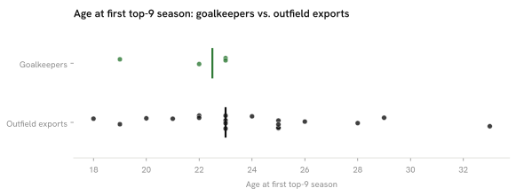

Summary · Question 11 of 14
Czech goalkeepers in the top-9 leagues per million and their age at the first top-9 season, 2025/26
4 Czech goalkeepers played ≥ 450 minutes in the top-9 leagues, 0.37 per million (rank 4–5 of 9), and their median age at the first top-9 season was 22.5 (n = 4) against 23 for outfield exports (n = 19).

Club tier: Czech top-9 goalkeepers, 2025/26
| Player | Club | League | Minutes | Club goals percentile |
|---|---|---|---|---|
| Lukáš Horníček | Braga | POR-Primeira Liga | 2959 | 83 % |
| Matěj Kovář | PSV | NED-Eredivisie | 2790 | 100 % |
| Vitezslav Jaros | Ajax | NED-Eredivisie | 1710 | 83 % |
| Antonín Kinský | Tottenham | ENG-Premier League | 630 | 42 % |
Goalkeeper production: Czech keepers, 2025/26
| Player | Club | League | Minutes | Goals against per 90 | Saves per 90 | Save % | Clean-sheet share |
|---|---|---|---|---|---|---|---|
| Antonín Kinský | Tottenham | ENG-Premier League | 630 | 1.00 | 1.43 | 65.9 % | 29 % |
| Vitezslav Jaros | Ajax | NED-Eredivisie | 1710 | 1.21 | 3.26 | 68.3 % | 26 % |
| Matěj Kovář | PSV | NED-Eredivisie | 2790 | 1.32 | 2.74 | 67.8 % | 23 % |
| Lukáš Horníček | Braga | POR-Primeira Liga | 2959 | 1.00 | 2.19 | 66.6 % | 36 % |
| Martin Jedlička | Baník Ostrava | CZE-First League | 1440 | 1.50 | 3.12 | 67.5 % | 31 % |
| Michal Reichl | Bohemians 1905 | CZE-First League | 1990 | 1.40 | 2.89 | 67.5 % | 22 % |
| Hugo Jan Bačkovský | Dukla Prague | CZE-First League | 1260 | 1.29 | 3.36 | 67.8 % | 21 % |
| Stanislav Dostál | Fastav Zlín | CZE-First League | 2700 | 1.47 | 3.03 | 67.4 % | 30 % |
| Jan Hanuš | Jablonec | CZE-First League | 2326 | 1.20 | 2.24 | 67.2 % | 42 % |
| Aleš Mandous | Mladá Boleslav | CZE-First League | 720 | 3.12 | 2.75 | 66.4 % | 0 % |
| Jiří Floder | Mladá Boleslav | CZE-First League | 2250 | 1.20 | 2.92 | 67.8 % | 36 % |
| Aleš Mandous | Pardubice | CZE-First League | 480 | 1.50 | 2.81 | 67.4 % | 0 % |
| Jan Koutny | Sigma Olomouc | CZE-First League | 2766 | 1.20 | 2.77 | 67.7 % | 29 % |
| Jakub Markovič | Slavia Prague | CZE-First League | 1317 | 0.55 | 1.71 | 67.8 % | 53 % |
| Jindřich Staněk | Slavia Prague | CZE-First League | 1710 | 1.05 | 2.11 | 67.4 % | 32 % |
| Tomáš Koubek | Slovan Liberec | CZE-First League | 2970 | 1.09 | 2.73 | 67.9 % | 33 % |
| Jiří Borek | Slovácko | CZE-First League | 540 | 1.67 | 3.33 | 67.4 % | 33 % |
| Milan Heča | Slovácko | CZE-First League | 2250 | 1.40 | 3.04 | 67.6 % | 24 % |
| Matouš Trmal | Teplice | CZE-First League | 3060 | 1.24 | 2.94 | 67.9 % | 32 % |
| Martin Jedlička | Viktoria Plzeň | CZE-First League | 1274 | 1.41 | 2.90 | 67.5 % | 27 % |
| Viktor Baier | Blau-Weiß Linz | AUT-Bundesliga | 1530 | 1.71 | 3.06 | 65.9 % | 18 % |
| Adam Stejskal | WSG Tirol | AUT-Bundesliga | 2790 | 1.65 | 2.13 | 65.0 % | 23 % |
Goalkeepers per million, by country
How we know
0.37 per million; first top-9 season at a median age of 22.5 (n = 4), against 23 for outfield exports (n = 19); with this few goalkeepers the two medians cannot be compared.
As an analytics question In numbers: Czech goalkeepers with ≥ 450 minutes in the top-9 leagues, per million inhabitants, against outfield export age.
What we did We counted goalkeepers the same way we counted outfield players, then compared the age each group first reached one of the strongest leagues.
Sources 450-minute floor, 2025/26 rosters; goals against and saves per 90 are shrunk toward the league median with a prior worth 900 minutes, as every rate in the atlas; first season in a fetched top-9 table; players already there in 2020/21 are censored (0 % of the goalkeepers, 21 % of the outfield exports); a comparison of two pathways inside one nation, not a causal claim.
What this means
Czechia had 4 goalkeepers with at least 450 minutes in the top-9 leagues. The age comparison rests on 4 goalkeepers, too few to tell two medians apart, and the per-million rank rests on counts of a few goalkeepers per country, where one player moves a country by several places.
What this does not show
Goalkeepers’ performance separated from their defence, goalkeepers in leagues outside the nine, and back-up goalkeepers below 450 minutes.
Data snapshot: FBref tables fetched 14 September 2026, snapshot commit ddf1c7b · code: src/goalkeepers.py · status: exploratory, not pre-registered · all limitations